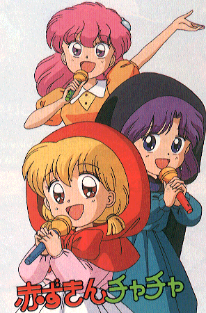

Akazukin Cha Cha

From the Anime Pocket Guide:
Cast:
Akazukin Chacha .......................... Masami Suzuki
Magical Princess .......................... Masami Suzuki
Kurozukin Yakko ............................ Mayumi Akado
Seravi (magic teacher) .................. Tohru Senrui
Dorothy (magic teacher) ................. Junko Ohtsubo
Elizabeth (Seravi's doll) ................. Junko Ohtsubo
Riiya (a werewolf) .................... Shingo Katori
Shiine (Dorothy's apprentice) .......... Noriko Hidaka
Marin (a mermaid) ...................... Tomo Sakurai
Orin (a ninja warrior) ............... Noriko Namiki
Rascal-sensei ............................. Taiki Matsuno
Urara Principal .......................... Sumi Shimamoto
Riiya's grandfather ...................... Seiji Mizutani
Daimaou ................................... Tetsuo Komura
Sorges .................................... Yuuji Mitsuya
Yordas .................................... Yuuji Mitsuya
Haidenyansu ............................... Yuuji Mitsuya
Pii-suke (Chacha's pet bird) ............ Sumi Shimamoto
Queen (Chacha's mother) .................... Ai Satou
Soprano ................................. Akiko Hiramatsu
Barabaraman-sensei .................. Tsutomu Kashiwakura
Genius .................................... Yamada Ki-ton
Popy (OAV) ............................... Rica Matsumoto
Kyuupiel ................................ Kazuyuki Sogabe
Access .................................. Kouji Takahashi
Mikeneko ................................ Kouji Takahashi
Nezumi Kid ................................... Kazuki Yao
Muura Maasa .................................. Ryo Naitou
Description:
In a magical land, a little girl named Chacha (think 'Little Red
Riding Hood') practices her magic. She turns the flowers above
into...scary spiders? Seravi, her teacher, hastily changes
them back to flowers. Despite this, Chacha persuades (well begs,
actually) Seravi to enroll her in Magic School. Before she goes,
Seravi gives her a present...the Princess Medallion. Along with
a bracelet and ring, the 3 parts form a powerful magical key. As
it happens, her friend Riiya gets the bracelet and Shiine (who
wants Chacha to choose him instead of Riiya) gets the ring. With
this, the 3 friends can transform Chacha into Magical Princess
Holy-Up. Using her bow and magical arrow, Holy-Up can defeat
evil. An evil force wants Chacha's power and his agents create
problems for her at her school. As if she doesn't have enough
problems with classmates like the jealous Yakko (who loves
Seravi) and Marin (who loves Riiya). This is a very funny (and
cute!) series that had me laughing on the floor at times. Most
of the jokes seem to center around Chacha's misfiring magic.
Other Resources
Anime Video Game Resource Center © 1998 by Luis A. Cruz